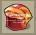
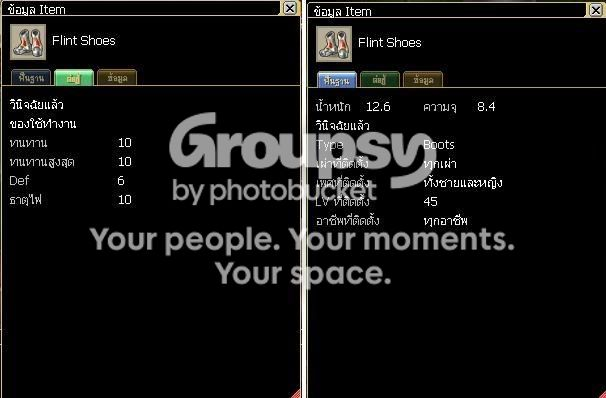
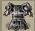

event ที่ใต้ เมื่อเอาหิน 10 ก้อนไปแลก
[GM]เป๊ปเป้ เขียน:DarknessNeko เขียน:
- event ที่ใต้ เมื่อเอาหิน 10 ก้อนไปแลก
เช่น flint - Light Steel - Demon Steel
จะได้เป็นไอเท็มอะไรมั่งครับ?
:oops: เมื่อนำหิน Flint (Sal Steel) , Demon Steel , Light Steel อย่างละ 10 ชิ้น มาให้ NPC : Ironsmith จะสามารถแลกเป็น Item ต่างๆ ได้ตามหัวข้อดังนี้ค่ะ
:arrow: Flint (Sal Steel) 10 ชิ้น สามารถนำมาแลกเป็น Item ได้ดังนี้ค่ะ
-- Sal Steel 10 ชิ้น แลกเป็น
-- Sal Steel 10 ชิ้น แลกเป็น
-- Sal Steel 10 ชิ้น แลกเป็น
-- Sal Steel 10 ชิ้น แลกเป็น
:arrow: Demon Steel 10 ชิ้น สามารถนำมาแลกเป็น Item
ได้ค่ะ
:arrow: Light Steel 10 ชิ้น สามารถนำมาแลกเป็น Itemได้ค่ะ


ขอบคุณ [GM]เป๊ปเป้ อย่างมากมายครับ
เอามาแปะเผื่อใครอยากจะทำกัน = ="